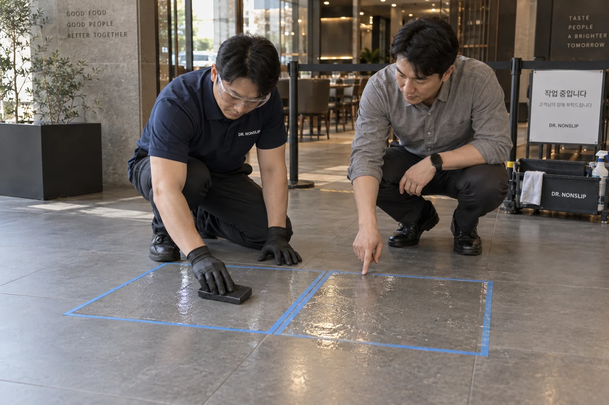
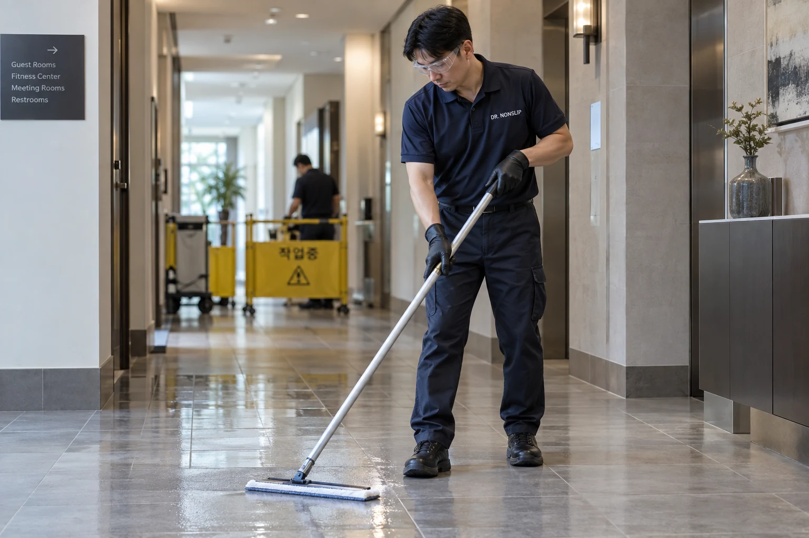

01 · 시공 효과
시공 효과,
젖은 바닥에서 확인하세요.
같은 재질과 위치에서 물기 조건을 맞춰 미끄럼 정도를 비교합니다. 작은 구역의 샘플을 확인한 뒤 본 시공을 결정합니다.
샘플 시공 · 물기 조건 · 현장 비교안전·품질
시공 효과, 원바닥의 변화, 약제 취급과 주변 보양.
고객이 궁금해하는 네 가지를 현장에서 확인합니다.

01 · 시공 효과
같은 재질과 위치에서 물기 조건을 맞춰 미끄럼 정도를 비교합니다. 작은 구역의 샘플을 확인한 뒤 본 시공을 결정합니다.
샘플 시공 · 물기 조건 · 현장 비교
02 · 원바닥 확인
원바닥의 재질과 기존 마감을 살피고, 샘플에서 표면 반응과 외관 변화를 확인합니다. 고객이 확인한 결과로 적용 여부와 범위를 정합니다.
재질 · 기존 마감 · 색과 광택
03 · 주변 보양
금속·집기·벽면 등 약제가 닿지 않아야 하는 주변을 보양합니다. 시공할 구역을 분리한 뒤 해당 바닥에 작업합니다.
금속 마감 · 집기 · 벽면 보호
04 · 약제와 마무리
물질안전보건자료(MSDS)와 사용 지침을 기준으로 취급합니다. 재질에 맞는 조건으로 처리하고, 마무리에는 약제·오염 잔여물을 세척·회수합니다.
취급 지침 · 재질별 적용 · 세척과 회수시공한 구역의 변화와 외관을 함께 확인하고,
이용 시점과 재질에 맞는 청소 방법을 안내합니다.